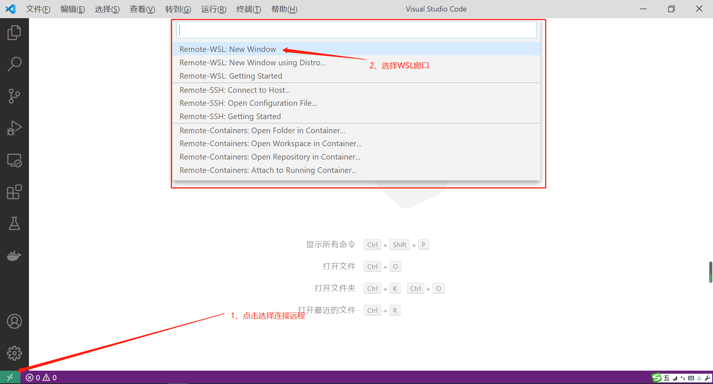
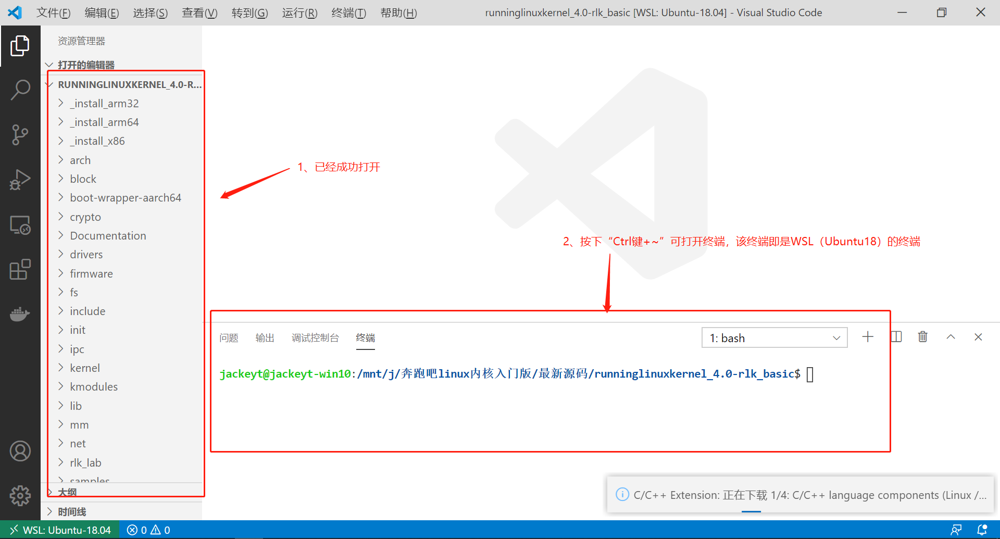
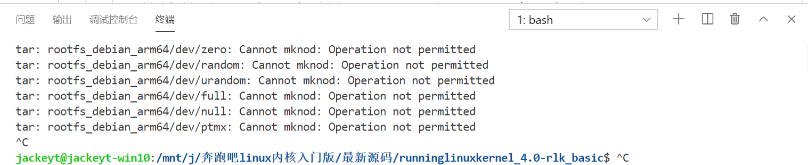
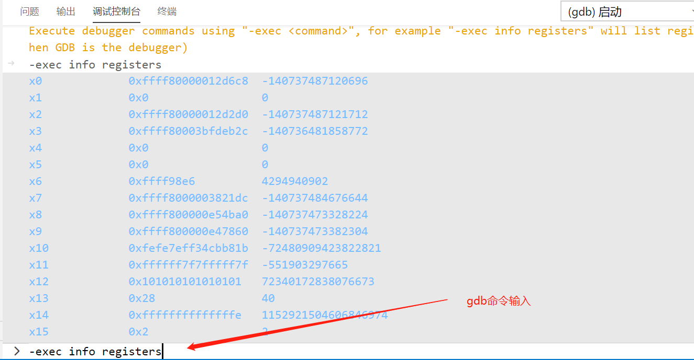

[首发][史上最详细][纯WIN10环境]VSCode搭建Linux Kernel单步调试IDE环境
0.环境介绍
主机：Windows10
版本:Windows10专业版
版本号:1909
安装日期:2019/10/16
操作系统版本18363900
WSL版本：WSL1（或者2）ubuntu18.04
编译器：aarch64-linux-gnu-gcc (gcc version 7.3.0)
调试器：主机：aarch64-linux-gnu-gdb (gcc version 7.3.0) 开发板：gdbserver(7.3.0)
VS Code版本
版本: 1.46.1 (user setup)
提交: cd9ea6488829f560dc949a8b2fb789f3cdc05f5d
日期: 2020-06-17T21:13:20.174Z
Electron: 7.3.1
Chrome: 78.0.3904.130
Node.js: 12.8.1
V8: 7.8.279.23-electron.0
OS: Windows_NT x64 10.0.18363
1.准备工作
1.1、安装WSL
下载安装WSL程序，如本例中提到的：ubuntu18.04
1.2、安装VSCode
Windows版的VSCode，下载地址
1.3、安装VSCode插件
在扩展里面添加即可
- C/C++ (必选)
- C/C++ Intellisense(可选)
- C/C++ Snippets(可选)
Remote(必选三件套，微软官方出品)
- Remote-WSL
- Remote-SSH
- Remote-Containers
Embedded Linux Dev(设备树插件) Kconfig(设备树插件依赖)
1.4、下载Linux内核代码
推荐下载：https://github.com/figozhang/runninglinuxkernel_4.0
推荐理由：
- 1、4.0版本非常经典，适合学习
- 2、该代码仓库是书籍的配套代码，比较完善
- 3、该代码仓库已经配置好了各种比较烦杂的环境，如：qemu网络桥接、根文件系统、qemu共享文件夹等
- 4、最后强调：前期配套开发环境，不需要重复造轮子，纠结于小细节，先站在巨人肩上，整套流程熟悉之后，可以随时替换、修改这套环境
1.5、搭建Linux内核编译环境
Ubuntu18.04(WSL)相关问题可直接百度查找
- Linux环境：ubuntu18.04 (WSL)
- Linux安装依赖包：
sudo apt-get install libncurses5-dev libssl-dev build-essential openssl bison bc flex git
当然你可以使用如下命令来安装编译内核需要的所有依赖包。
sudo apt build-dep linux-image-generic
- Linux环境安装编译链：
因为linux 内核版本原因，因为所用版本为4.0，所以需要5.x的gcc交叉链
一次性安装ARM32/64所用的交叉链
sudo apt install gcc-5-aarch64-linux-gnu gcc-5-arm-linux-gnueabihf
如果系统中已经有其他版本的gcc交叉链，可使用
update-alternatives进行管理,可以参考：
update-alternatives 命令的主要参数如下
update-alternatives --install <link> <name> <path> <priority>
link：指向/etc/alternatives/<name>的符号引用
name：链接的名称
path：这个命令对应的可执行文件的实际路径
priority：优先级，在 auto 模式下，数字大的优先级比较高。
2.VSCode+WSL搭建IDE
- 到这里我们已经完成了WSL、VScode及其插件的安装，接下来可以使用VSCode和WSL进行编译、调试
2.1、使用VSCode连接WSL



2.2、开始编译内核
- 其实该源码目录已经集成好编译、运行、调试所需要的脚本
- 该源码已经支持ARM32+debian或ARM64+debian，本例以为ARM64+Debian为例
在终端中运行：
./run_debian_arm64.sh build_kernel

- 编译完成：

2.3、编译Rootfs
- 编译 ARM64 版本的Debian 系统 rootfs
$sudo ./run_debian_arm64.sh build_rootfs
- 注意：这里需要使用 root 权限。
- 编译完成后会生成一个 rootfs_debian_arm64.ext4 的文件系统。
- 注意：在WSL1下，有两个BUG：1、无法mount 2、无法生成ext4镜像，如下图所示，该BUG在WLS2中可以解决。

- 所以，WSL1版本的环境，可以在虚拟机VM或者其他环境下自行打包，或者可以使用打包好的ARM64_Rootfs.ext4,点击下载。
2.4、运行Rootfs
$ ./run_debian_arm64.sh run
-
注意：运行此命令不需要 root 权限。
-
注意：用户名：root 密码:123
-
成功运行之后，如下图所示：

- 成功登录之后，如下图所示：

2.5、测试Debian系统
因为是基于Debian系统，且网络等都是已经搭建好的，直接可以使用APT等命令进行安装在线包，以下为简单测试：

QEMU 虚拟机可以通过VirtIO-NET 技术来生成一个虚拟的网卡，并且通过 NAT网 络桥接技术和主机进行网络共享。首先使用 ifconfig 命令来检查网络配置。 可以看到生成了一个名为 eth0 的网卡设备，分配的 IP 地址为：10.0.2.15。 通过apt update 命令来更新 Debian 系统的软件仓库。


2.6、主机和 QEMU 虚拟机之间共享文件
主机和 QEMU 虚拟机可以通过NET_9P 技术进行文件共享，这个需要 QEMU 虚 拟机的 Linux 内核使能 NET_9P 的内核模块。本平台已经支持主机和 QEMU 虚拟机的共享文件，可以通过如下简单方法来测试。
- 共享目录为:kmodules
- 系统目录为:mnt
效果如下图所示：

- 在 kmodules 目录下面新建一个 test.c 文件。


我们在后续会经常利用这个特性，比如把编译好的内核模块或者内核模 块源代码放入QEMU 虚拟机。
3. 一键单步调试内核
直到这一步，已经完成了基于WSL+VScode的环境搭建，这样就可以得到一个集终端、文件管理器、git管理器、运行调试等等等一体化的IDE环境了，这样就可以在纯WIN10下实现单步调试内核的目的了，非常方便。
3.1、配置内核调试命令
内核的编译调试命令已经全部打包进了脚本文件，感兴趣的童鞋可以去深入了解一下，这里以ARM64为例：
./run_debian_arm64.sh run debug
此时，gdbserver已经在1234端口等待连接！
3.2、配置VSCode Debug选项
选择：运行（R）-> 添加配置 -> C++（GDB/LDB）
如下动图所示：

添加如下配置信息：
{
// 使用 IntelliSense 了解相关属性。
// 悬停以查看现有属性的描述。
// 欲了解更多信息，请访问: https://go.microsoft.com/fwlink/?linkid=830387
"version": "0.2.0",
"configurations": [
{
"name": "(gdb) 启动",
"type": "cppdbg",
"request": "launch",
"program": "${workspaceFolder}/vmlinux",
"args": [],
"stopAtEntry": true,
"cwd": "${workspaceFolder}",
"environment": [],
"externalConsole": true,// 调试时是否显示控制台窗口，一般设置为true显示控制台
"MIMode": "gdb",
"miDebuggerPath":"/usr/local/bin/aarch64-linux-gnu-gdb",
"miDebuggerServerAddress": "192.168.1.111:1234",
"setupCommands": [
{
"description": "为 gdb 启用整齐打印",
"text": "-enable-pretty-printing",
"ignoreFailures": true
}
]
}
]
}
- 注意:192.168.1.111 是本地WIN10的IP也就是WSL的IP
- 这里有个小小的BUG，必须输入IP地址，不能使用localhost顶替（在其他环境下是可以的）
- gdb路径："miDebuggerPath":"/usr/local/bin/aarch64-linux-gnu-gdb"
- gdb监听端口："miDebuggerServerAddress": "192.168.1.111:1234",1234与上一小节中的Listen端口一致！
3.3、一键调试
经过3.1、3.2的配置已经实现了调试的前置条件，现只需按下F5键就可以实现一键调试了，如下图所示：

3.4、更多GDB调试技巧
在终端界面栏，切换至调试控制台;输入命令，如：-exec info registers，即可查看调试过中的的寄存器

4.单步调试应用层+内核
经过前面0~3的铺垫，我们已经具备了以下三个条件： 1、完整的内核（编译环境、调试环）+完整的Rootfs 2、完整的qemu环境,包括：网络共享、桥接等，可以随时将主机的文件共享给qemu（本地的kmodules文件夹《---》虚拟机里面的mnt文件夹） 3、完整的GDB调试环境，可以实现内核单步调试
那么，针对以上条件，如果我们想要调试或者参考一个Linux应用程序如何访问到内核的，是否可以完成呢？答案是可以的！ 请看下面！
4.1 创建简单的APP程序
在kmodules文件夹里面新建一个test.c内容如下：
#include <stdio.h>
#include <stdlib.h>
#include <unistd.h>
#include <sys/types.h>
#include <sys/stat.h>
#include <fcntl.h>
#include <errno.h>
unsigned char readbuf[255];
int count = 0;
int main(void)
{
int fd ;
int retval;
printf("hello world!\n");
fd = open("./README",O_RDONLY);
if ( fd == -1 )
{
perror( "open dht11 error\n" ) ;
exit( -1 ) ;
}
printf( "open ./README\n" ) ;
sleep( 2 ) ;
while( 1 )
{
sleep( 1 ) ;
if(count++ == 0)
{
printf("count=%d\n",count);
}
}
close( fd ) ;
return 0;
}
### 4.2 编译&调试
输入编译命令：
aarch64-linux-gnu-gcc test.c -o test
即可在kmodules文件夹下面得到一个新的test应用程序。
接着，按第三节做法进入可单步调试内核的环境。
整体演示效果如下图所示，只是简单的演示，实现从应用层到内核层的调用过程，更深的应用可以继续发掘。

5.单步调试modules+内核
5.1、简单测试代码准备
在主机kmodules文件夹下新建一个简单的内核模块程序hello_drv.c及对应的Makefile文件
- 内核模块程序
hello_drv.c内容示例：
/*
* 1 include files
* 2 __init module_init() insmod
* 3 __exit module_exit() rmmod
* 4 GPL BSD Aeplli GPLv2 MIT
* 5 module_license(GPL)
*/
#include <linux/init.h>
#include <linux/module.h>
#include <linux/fs.h>
#include <linux/device.h>
#include <asm/uaccess.h>
#include <asm/io.h>
#include <linux/device.h>
struct class *hello_class;
struct device * hello_dev;
int hello_open(struct inode *inode, struct file *flips)
{
printk("--------------%s--------------\n",__FUNCTION__);
return 0;
}
static ssize_t hello_write(struct file *file, const char __user *in,
size_t size, loff_t *off)
{
printk("--------------%s--------------\n",__FUNCTION__);
unsigned int buf = 88;
copy_from_user(&buf, in ,size );
printk("write buf is : %d\n",buf);
}
static ssize_t hello_read(struct file *file, char __user *buf,
size_t nbytes, loff_t *ppos)
{
printk("--------------%s--------------\n",__FUNCTION__);
unsigned int a = 100;
copy_to_user(buf,&a,sizeof(int));
}
static int my_major = 0;
const struct file_operations myfops={
.open = hello_open,
.write= hello_write,
.read = hello_read,
};
static int __init hello_init(void)
{
printk("--------------%s--------------\n",__FUNCTION__);//app printf
my_major = register_chrdev(0,"hello",&myfops);
if(my_major <0)
{
printk("reg error!\n");
}
else
printk("my_major =%d",my_major);
hello_class = class_create(THIS_MODULE,"hello_class");//creat hello_class
hello_dev = device_create(hello_class, NULL,MKDEV(my_major,0), NULL, \
"hello_dev");//creat hello_dev--->>/dev/hello_dev
return 0;
}
static void __exit hello_exit(void)
{
printk("--------------%s--------------\n",__FUNCTION__);
device_destroy(hello_class,MKDEV(my_major,0));
class_destroy(hello_class);
unregister_chrdev(my_major,"hello");
}
module_init(hello_init);
module_exit(hello_exit);
MODULE_LICENSE("GPL");
- 内核模块程序
hello_drv.c内容示例：
ifeq ($(KERNELRELEASE),)
export ARCH=arm64
export CROSS_COMPILE=aarch64-linux-gnu-
KERNELDIR=/mnt/j/奔跑吧linux内核入门版/最新源码/runninglinuxkernel_4.0-rlk_basic #your kernel dirction
NFS_DIR=$(KERNELDIR)/kmodules
CUR_DIR := $(shell pwd)
all :
make -C $(KERNELDIR) M=$(CUR_DIR) modules
install:
cp -ranf *.ko $(NFS_DIR)/
clean :
make -C $(KERNELDIR) M=$(CUR_DIR) clean
.PHONY: modules install clean
else
obj-m := hello_drv.o
endif
- 编译
- 注意，这里的编译应该是在主机环境下，即WSL的命令行中：
make

5.2、开始调试
我们知道当使用insmod时，会调用对应的__init接口，而在本例中，hello_init就为入口函数，因此简单测试一下，在内核中找到register_chrdev对应的接口定义，并打好断点，待insmod执行之后，观察内核的运行过程。

- 在内核中打上相应断点：


演示效果动图：